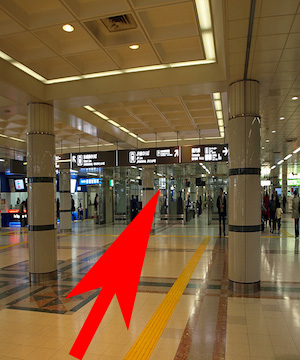
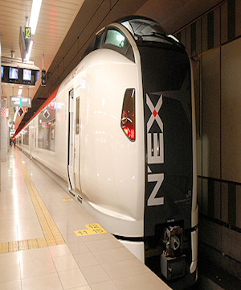

The got off the escalator first,
I go in the direction of the arrow labeled 2

I go to the arrow as

The entrance gate that says Narita Airport Station
Passes.

And then because it will take you to the home of the station
Please wait until the arrival time.